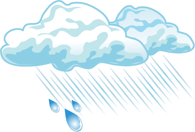

Word List
introduction
The last couple of lessons have been spent learning different ways to talk about the weather. In this lesson we put it all together to understand the following video clips, before creating your very own weather forecast.
 WEATHER REPORTS
WEATHER REPORTS
Click on the tabs to watch the videos and learn about creating a weather forecast.
Weather report 1
Video
Language Focus
There are two sentence structures in this video clip.
-
The first is the present tense verbal sentence structure which we learned about back in Lesson Two.
‘Kei te ... ’, for example:
‘Kei te whiti te rā.’
‘The Sun is shining.’ -
The second is the sentence structure we learned about in the last lesson to describe what kind of day it is.
‘He rangi...’, for example:
‘He rangi wera.’
‘It’s a hot day.’
There are also a couple of new phrases/words that you have not come across yet.
For example, one word for weather is huarere.
You may have noticed the use of the word ‘tino’. ‘Tino’ is used to intensify adjectives. e.g. ‘tino mākū’ – very wet.
NOTE: Unless the new phrases/words appear in the word list don’t worry too much about learning them at the moment, although you may want to incorporate them into your own weather forecast, but this is entirely up to you!
Transcript and Translation
Now watch the video again and read the transcript and translation while you are watching. Hover over the boxes for the English translation.
| Ngā āhua o te huarere. The weather. | Kei te whiti te rā. The Sun is shining. | He rangi wera. It’s a hot day. | Āe. He rangi paki. Yes. It’s a fine day. |
| Kei te heke te ua. The rain is falling. | He rangi mākū. It’s a wet day. | He rangi tino mākū! A very wet day! | |
| Kei te pupuhi te hau. The wind is blowing. | He rangi makariri, nē rā? It’s a cold day, isn’t it? | Āe. He rangi tino makariri. Yes. It’s a very cold day. | Haere rā. Goodbye |
Weather report 2
Video
Language Focus
You would have heard the addition of place names in this video clip.
For example:
Ki Taihape, ka heke te ua.
In Taihape, the rain will fall/descend.
Furthermore, because we are talking about a weather forecast for tomorrow we have to change the sentence.
| from Present Tense | to Future Tense |
|---|---|
|
‘Kei te ...’, e.g. ‘Kei te heke te ua.’
‘The rain is falling/descending.’ |
‘Ka ...’ e.g. ‘Ka heke te ua.’
‘The rain will fall/descend.’ |
However, the rest of the sentence remains the same.
Present tense. Signals that you’re talking about now, the present.
| Kei te | heke | te + ua |
|  |
|---|
Future tense. Signals that you’re talking about the future.
| Ka | heke | te + ua |
Transcript and Translation
| Ngā tohu huarere mō āpōpō. The weather forecast for tomorrow. | Tēnā koutou katoa, anei ngā tohu huarere mō āpōpō. Ki Taihape, ka heke te ua. Greetings all, here’s the weather forecast for tomorrow. In Taihape, the rain will fall/descend. | Ka heke te ua. The rain will fall/descend. | Ki Taupō, ki Te Puku-o-Te- Ika-a-Māui, ka whiti te rā. In Taupō, in the centre of the North Island, the Sun will shine. |
| Ka whiti te rā. The Sun will shine. | Ki Ōhakune, ka pupuhi te hau. Ka tau te hukapapa. In Ōhakune, the wind will blow. The frost will settle. | Ka pupuhi te hau. The wind will blow. | Ka tau te hukapapa. The frost will settle. |
Weather report 3
Video
Language Focus
New in this video clip is the use of ‘he’ before nouns.
For example:
‘he huka’ – ‘some snow’.
You will also notice the word ‘hoki’ which, in this context, means ‘also’.
Transcript and Translation
| Anei ngā tohu huarere mō āpōpō. Here’s the weather forecast for tomorrow. | Ki Ōtepoti, he huka. In Dunedin, some snow. | Ki Ōtautahi, he kapua. In Christchurch, some cloud. |
| He hau matangi ki Wakatū. A breeze in Nelson. | Mō koutou e noho ana i Te Whanganui-a-Tara, ka whiti te rā i ētahi wā. For those living in Wellington, the Sun will sometimes shine. | Ki Taupō, ka pupuhi te hau. In Taupō, the wind will blow. |
| Ki Kirikiriroa, he paki te rā. In Hamilton, the day will be fine. | Ka heke te ua ki Tāmaki-makau-rau. The rain will fall/descend in Auckland. | He kōuaua ki Kaitaia, ki Whangārei hoki. There will be showers in Kaitaia, and also in Whangārei. |
4A
Weather report
You now have the opportunity to try your hand at being a weather reporter. You are going to create your own weather report to be televised.
The first step involves writing your script.
- Begin with an opening greeting and your name.
- Give a report about the weather at present and a forecast for tomorrow.
- Conclude your report with an appropriate farewell.
Handy hints:
- You might want to include the words ‘I tēnei wā’ and ‘Āpōpō’ at the beginning of your present and future tense sentences.
Examples:- I tēnei wā kei te heke te ua – At this time the rain is falling/descending.
- Āpōpō ka heke te ua – Tomorrow the rain will fall/descend.
- Have a look back at Activity 3C for some Māori place names of cities around the country e.g. ‘Ōtepoti’ – Dunedin. Alternatively go to http://maoridictionary.co.nz/ and search for the Māori names.
Once you have completed writing your script, use the dropbox to share it with your teacher. Your teacher will provide you with feedback and then you can start practising saying it. You will be asked to deliver and record your weather report in Lesson Seven of this module.
Upload to dropboxClick here for a rubric that you can use to make sure you have written your script correctly. Your teacher will use a similar one to assess your weather report. You can download the document if you wish.